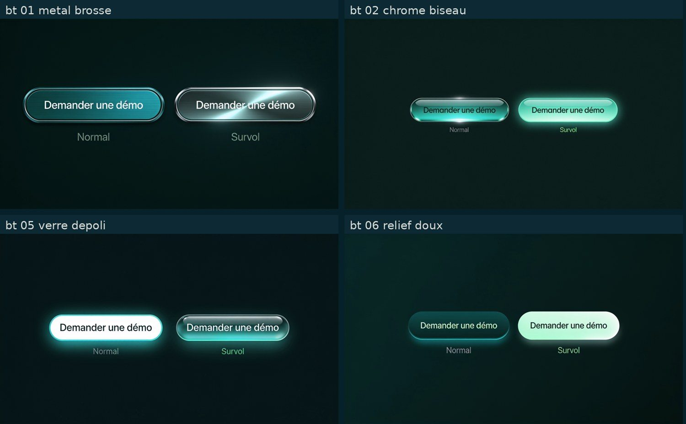
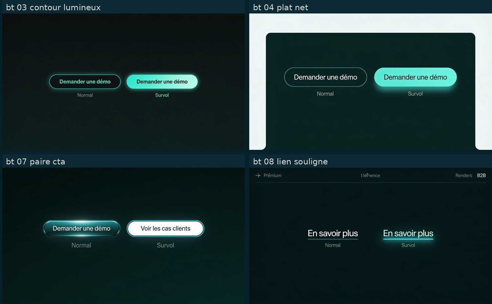
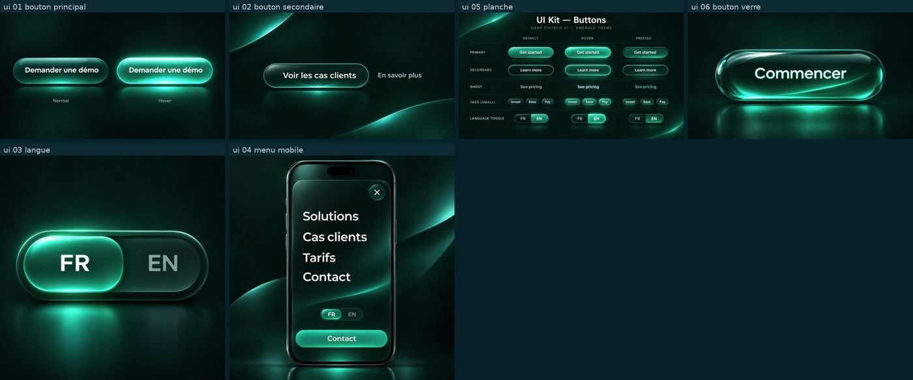

<meta charset="utf-8">
<title>Boutons Kaalytics</title>
<meta name="claude:viewport-fit-sides" content="cover">
<link rel="stylesheet" href="https://fonts.googleapis.com/css2?family=Inter:wght@500;600;700&family=Inter+Tight:wght@600;700&family=IBM+Plex+Mono:wght@500&display=swap">
<style>
/* Planche de boutons vivants : six styles, survol et appui réels. Fond du site (#040a08), palette émeraude. */
:root {
    --fond: #040a08; --surface: #0b1613; --texte: #ecfdf5; --gris: #8fa59c; --filet: rgba(143, 165, 156, 0.18);
    --e: #10b981; --e-clair: #34d399; --e-pale: #a7f3d0; --e-profond: #065f46;
    color-scheme: dark;
}
* { box-sizing: border-box; }
body { margin: 0; background: var(--fond); color: var(--texte); font: 500 15px/1.5 'Inter', system-ui, sans-serif; }
.page { max-width: 760px; margin: 0 auto; padding-block: 28px 64px; padding-left: max(16px, env(safe-area-inset-left, 0px)); padding-right: max(16px, env(safe-area-inset-right, 0px)); }
h1 { margin: 0 0 6px; font: 700 1.8rem/1.1 'Inter Tight', sans-serif; letter-spacing: -0.02em; }
.chapeau { margin: 0 0 28px; color: var(--gris); }
.style { padding: 26px 0 30px; border-top: 1px solid var(--filet); }
.style h2 { margin: 0 0 4px; font: 600 1.05rem/1.2 'Inter Tight', sans-serif; display: flex; gap: 10px; align-items: baseline; }
.style h2 b { font: 500 0.75rem/1 'IBM Plex Mono', monospace; color: var(--e-clair); letter-spacing: 0.08em; }
.style p { margin: 0 0 20px; color: var(--gris); font-size: 0.9rem; }
.rang { display: flex; flex-wrap: wrap; gap: 14px; align-items: center; padding: 26px 18px; border-radius: 18px;
    background: radial-gradient(90% 120% at 30% 0%, rgba(16, 185, 129, 0.12), transparent 60%), #060f0c; }
.ref { margin-top: 28px; border-top: 1px solid var(--filet); padding-top: 24px; }
.ref img { width: 100%; border-radius: 12px; display: block; margin-top: 12px; }
.ref p { color: var(--gris); font-size: 0.9rem; }

/* Base commune */
.b { position: relative; display: inline-flex; align-items: center; justify-content: center; gap: 10px; min-height: 52px; padding: 0 28px;
    border: 0; border-radius: 999px; font: 600 1rem/1 'Inter', sans-serif; letter-spacing: -0.005em; cursor: pointer; text-decoration: none;
    transition: transform 0.25s cubic-bezier(0.16, 1, 0.3, 1), box-shadow 0.3s ease, background-color 0.3s ease, color 0.3s ease; isolation: isolate; }
.b:focus-visible { outline: 2px solid var(--e-pale); outline-offset: 3px; }
.b svg { width: 18px; height: 18px; }

/* A · Verre émeraude bombé (version actuelle du site) */
.a { color: #03140f; background: radial-gradient(120% 80% at 50% -20%, rgba(255,255,255,.55), rgba(255,255,255,0) 55%), linear-gradient(180deg, #4ade9f, #1fca8c 40%, #10b981 65%, #0a9468);
    box-shadow: inset 0 1px 0 rgba(255,255,255,.6), inset 0 -3px 6px -2px rgba(4,47,35,.45), 0 0 0 1px rgba(110,231,183,.55), 0 0 22px -4px rgba(52,211,153,.65), 0 14px 30px -14px rgba(16,185,129,.95); }
.a:hover { transform: translateY(-2px); box-shadow: inset 0 1px 0 rgba(255,255,255,.7), 0 0 0 1px rgba(110,231,183,.8), 0 0 34px -2px rgba(52,211,153,.8), 0 18px 36px -14px rgba(16,185,129,1); }
.a:active { transform: translateY(1px) scale(.985); }
.a.sec { color: var(--texte); background: radial-gradient(120% 90% at 50% -30%, rgba(255,255,255,.16), transparent 55%), linear-gradient(180deg, #10241e, #07130f);
    box-shadow: inset 0 1px 0 rgba(255,255,255,.14), inset 0 0 0 1.5px rgba(52,211,153,.75), 0 0 16px -4px rgba(16,185,129,.55); }

/* B · Nuit lumineuse : sombre au repos, liseré qui brille, s'allume au survol (référence ui-01) */
.bb { color: var(--texte); background: linear-gradient(180deg, #0f231d, #06110d);
    box-shadow: inset 0 0 0 1.5px var(--e-clair), inset 0 0 18px rgba(52,211,153,.25), 0 0 24px -6px rgba(52,211,153,.7), 0 10px 24px -14px #000; }
.bb::after { content: ''; position: absolute; left: 18%; right: 18%; bottom: -10px; height: 14px; border-radius: 50%; z-index: -1;
    background: radial-gradient(closest-side, rgba(52,211,153,.75), transparent); }
.bb:hover { color: #03140f; background: linear-gradient(180deg, #6ee7b7, #10b981); box-shadow: inset 0 1px 0 rgba(255,255,255,.6), 0 0 0 1.5px var(--e-pale), 0 0 40px -4px rgba(52,211,153,.9); transform: translateY(-2px); }
.bb:active { transform: scale(.98); }
.bb.sec { box-shadow: inset 0 0 0 1px rgba(143,165,156,.45), 0 10px 24px -14px #000; }
.bb.sec::after { display: none; }
.bb.sec:hover { color: var(--texte); background: linear-gradient(180deg, #12302a, #0a1a16); box-shadow: inset 0 0 0 1.5px var(--e-clair), 0 0 24px -6px rgba(52,211,153,.7); }

/* C · Verre épais : pilule transparente, bord épais lumineux, lumière intérieure (référence ui-06) */
.c { color: var(--texte); padding: 0 34px; background:
        linear-gradient(180deg, rgba(255,255,255,.22) 0%, rgba(255,255,255,.04) 46%, rgba(255,255,255,0) 54%, rgba(52,211,153,.2) 100%),
        rgba(16,185,129,.16);
    box-shadow: inset 0 0 0 2px rgba(167,243,208,.75), inset 0 2px 0 rgba(255,255,255,.55), inset 0 -10px 18px -8px rgba(52,211,153,.75), 0 12px 30px -12px rgba(16,185,129,.9), 0 0 30px -10px rgba(52,211,153,.8); }
.c:hover { background: linear-gradient(180deg, rgba(255,255,255,.3), rgba(255,255,255,.06) 46%, rgba(255,255,255,0) 54%, rgba(52,211,153,.35)), rgba(16,185,129,.3); transform: translateY(-2px); }
.c:active { transform: scale(.98); }
.c.sec { background: linear-gradient(180deg, rgba(255,255,255,.12), rgba(255,255,255,0) 50%), rgba(255,255,255,.03); box-shadow: inset 0 0 0 1.5px rgba(236,253,245,.35), inset 0 1px 0 rgba(255,255,255,.35); }

/* D · Métal émeraude, dans la matière du nom Kaalytics */
.d { color: #021a12; text-shadow: 0 1px 0 rgba(255,255,255,.45); background:
        linear-gradient(180deg, #e9fff6 0%, #a7f3d0 22%, #34d399 46%, #0b7a57 50%, #10b981 62%, #6ee7b7 100%);
    box-shadow: inset 0 0 0 1px rgba(255,255,255,.55), inset 0 -2px 0 rgba(2,61,43,.5), 0 0 0 1px #065f46, 0 12px 26px -12px rgba(16,185,129,.9); }
.d:hover { filter: none; background: linear-gradient(180deg, #ffffff 0%, #c4f8de 22%, #4ade9f 46%, #0e8a62 50%, #22c387 62%, #a7f3d0 100%); transform: translateY(-2px); box-shadow: inset 0 0 0 1px rgba(255,255,255,.7), 0 0 0 1px #065f46, 0 0 26px -4px rgba(52,211,153,.8), 0 16px 30px -12px rgba(16,185,129,1); }
.d:active { transform: scale(.98); }
.d.sec { color: var(--e-pale); text-shadow: none; background: linear-gradient(180deg, #1b2f29, #0a1512); box-shadow: inset 0 0 0 1px rgba(167,243,208,.45), inset 0 1px 0 rgba(255,255,255,.12); }

/* E · Contour de lumière qui tourne autour du bouton */
@property --angle { syntax: '<angle>'; inherits: false; initial-value: 0deg; }
.e { color: var(--texte); background: #07130f; padding: 0 30px; }
.e::before { content: ''; position: absolute; inset: -1.5px; border-radius: inherit; z-index: -1;
    background: conic-gradient(from var(--angle), rgba(52,211,153,0) 0deg, rgba(52,211,153,0) 220deg, #a7f3d0 300deg, #10b981 340deg, rgba(52,211,153,0) 360deg), rgba(52,211,153,.25);
    animation: tour 3.2s linear infinite; }
.e::after { content: ''; position: absolute; inset: 1px; border-radius: inherit; z-index: -1; background: linear-gradient(180deg, #0f231d, #050d0a); }
.e:hover { transform: translateY(-2px); box-shadow: 0 0 30px -6px rgba(52,211,153,.8); }
.e:active { transform: scale(.98); }
@keyframes tour { to { --angle: 360deg; } }

/* F · Sobre haut de gamme : texte et pastille-flèche lumineuse qui avance au survol */
.f { color: var(--texte); background: linear-gradient(180deg, #12201c, #0a1411); padding: 0 8px 0 26px; gap: 16px;
    box-shadow: inset 0 1px 0 rgba(255,255,255,.08), inset 0 0 0 1px rgba(143,165,156,.22), 0 10px 26px -14px #000; }
.f i { display: grid; place-items: center; width: 38px; height: 38px; border-radius: 50%; color: #03140f;
    background: radial-gradient(circle at 50% 30%, #a7f3d0, #10b981 70%); box-shadow: 0 0 18px -2px rgba(52,211,153,.8); transition: transform .35s cubic-bezier(.16,1,.3,1); }
.f:hover { box-shadow: inset 0 1px 0 rgba(255,255,255,.1), inset 0 0 0 1px rgba(52,211,153,.6), 0 0 26px -8px rgba(52,211,153,.7); }
.f:hover i { transform: translateX(4px) rotate(-8deg); }
.f:active { transform: scale(.98); }

@media (prefers-reduced-motion: reduce) { .e::before { animation: none; } .b { transition: none; } }
</style>

<main class="page">
    <h1>Boutons Kaalytics</h1>
    <p class="chapeau">Six styles vivants : survol à la souris, appui au doigt. Choix d'une lettre, appliqué ensuite au site entier (boutons principaux et secondaires).</p>

    <section class="style"><h2><b>A</b>Verre émeraude bombé</h2><p>Version actuelle du site : émeraude pleine, reflet en haut, lueur portée.</p>
        <div class="rang"><a class="b a" href="#a">Parler à un expert</a><a class="b a sec" href="#a">Voir les modules</a></div></section>

    <section class="style"><h2><b>B</b>Nuit lumineuse</h2><p>Sombre au repos, liseré qui brille et halo dessous ; s'allume en émeraude au survol. Référence Studio ui-01.</p>
        <div class="rang"><a class="b bb" href="#b">Parler à un expert</a><a class="b bb sec" href="#b">Voir les modules</a></div></section>

    <section class="style"><h2><b>C</b>Verre épais</h2><p>Pilule de verre transparente, bord épais clair, lumière intérieure en bas. Référence Studio ui-06.</p>
        <div class="rang"><a class="b c" href="#c">Parler à un expert</a><a class="b c sec" href="#c">Voir les modules</a></div></section>

    <section class="style"><h2><b>D</b>Métal émeraude</h2><p>Même matière que le nom Kaalytics : métal poli, horizon chromé.</p>
        <div class="rang"><a class="b d" href="#d">Parler à un expert</a><a class="b d sec" href="#d">Voir les modules</a></div></section>

    <section class="style"><h2><b>E</b>Contour de lumière</h2><p>Bouton sombre, un trait de lumière tourne en continu sur son bord.</p>
        <div class="rang"><a class="b e" href="#e">Parler à un expert</a><a class="b e" href="#e">Voir les modules</a></div></section>

    <section class="style"><h2><b>F</b>Sobre avec pastille</h2><p>Bouton sombre et net, pastille émeraude avec flèche qui avance au survol.</p>
        <div class="rang">
            <a class="b f" href="#f">Parler à un expert<i><svg viewBox="0 0 24 24" fill="none" stroke="currentColor" stroke-width="2.4" stroke-linecap="round" stroke-linejoin="round"><path d="M5 12h14M13 6l6 6-6 6"/></svg></i></a>
            <a class="b f" href="#f">Voir les modules<i><svg viewBox="0 0 24 24" fill="none" stroke="currentColor" stroke-width="2.4" stroke-linecap="round" stroke-linejoin="round"><path d="M5 12h14M13 6l6 6-6 6"/></svg></i></a>
        </div></section>

    <section class="ref"><h2>Studio, série 2</h2><p>Huit pistes du Studio (Seedream 4.5, sans crédit), repos et survol. 01 métal brossé, 02 chrome biseauté, 03 contour lumineux, 04 plat net, 05 verre dépoli, 06 relief doux, 07 paire de boutons, 08 lien souligné. Un numéro choisi est refait en CSS sur tout le site.</p>
        
        </section>

    <section class="ref"><h2>Références du Studio</h2><p>Images générées le 28/11 (Higgsfield) dont s'inspirent les styles B et C.</p>
        </section>
</main>
